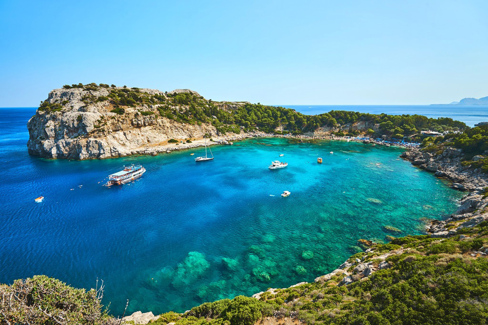

×

Greece
Климат
На большей части страны преобладает субтропический средиземноморский климат. Однако в силу большого разнообразия природных условий здесь можно выделить три крупные природно-климатические зоны и множество мелких. Северная Македония, северный Эпир, часть Фессалии и горные районы Пинда лежат в зоне умеренного горного климата, близкого по своим характеристикам к альпийскому. Лето здесь жаркое и сухое (среднеиюльская температура - +28°С), а зима холодная (в январе воздух нередко выстывает до -8°С) и влажная.
Аттика, центральный и восточный Пелопоннес, Киклады, Додеканес и Крит лежат в зоне типичного средиземноморского климата. Лето здесь сухое и жаркое, температура в июле-августе колеблется в районе отметки в +25-28°С, но нередко поднимается до +40-45°С. Сильные северные ветра "мельтемья" ("мельтеми") несколько снижают температуру, но не могут принести осадков, поэтому здесь нередки годы, когда за все лето не выпадает ни капли дождя. Зима мягкая (январь - +4-12°С) и влажная. Ноябрь - февраль - самые влажные месяцы в году, но на них же нередко приходятся и достаточно резкие (до -2-4°С) понижения температуры - на склонах Пинда, в горах Эвбеи и Крита иногда даже выпадает снег. Осадков в равнинных районах выпадает от 400-700 мм в год, в горах - до 1500 мм, причем западные склоны Пинда получают практически вдвое больше дождя, чем восточные.
Северо-восточные Эгейские острова, Халкидики и остров Тасос лежат в переходной зоне - здесь нередки как холодные зимы, так и иссушающе-жаркие летние периоды. Даже Крит - самый большой и южный из греческих островов - обладает несколькими климатическими областями: южное побережье здесь всегда более жаркое, чем северное, да и горные районы заметно отличаются по погодным условиям от побережья.
____